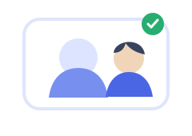

Aplicativo do aluno
Pronto para iniciar um atendimento.

O professor selecionado receberá sua solicitação.
Verificando câmera...
Verificando microfone...
Não compartilhando.
Autorização necessária
O professor deseja controlar seu computador.
Ao permitir, todos os monitores conectados serão compartilhados automaticamente e o professor poderá usar o mouse, digitar e executar atalhos de teclado neles. Nenhuma seleção adicional será exibida. Arquivos e área de transferência permanecem bloqueados.